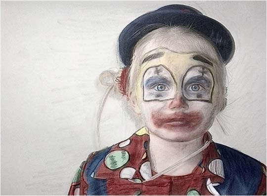
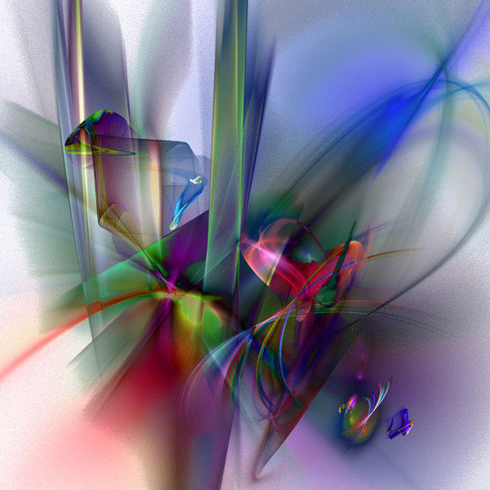
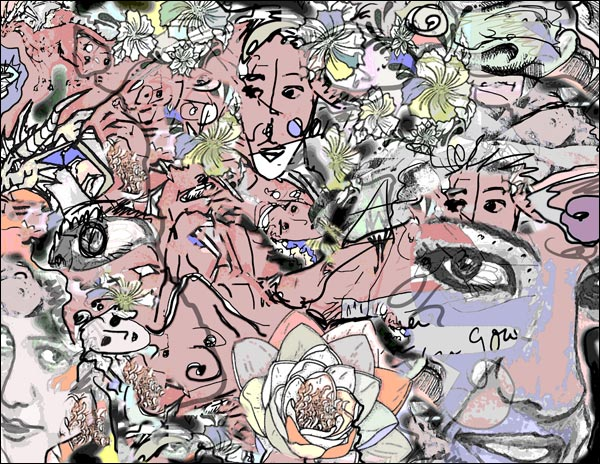
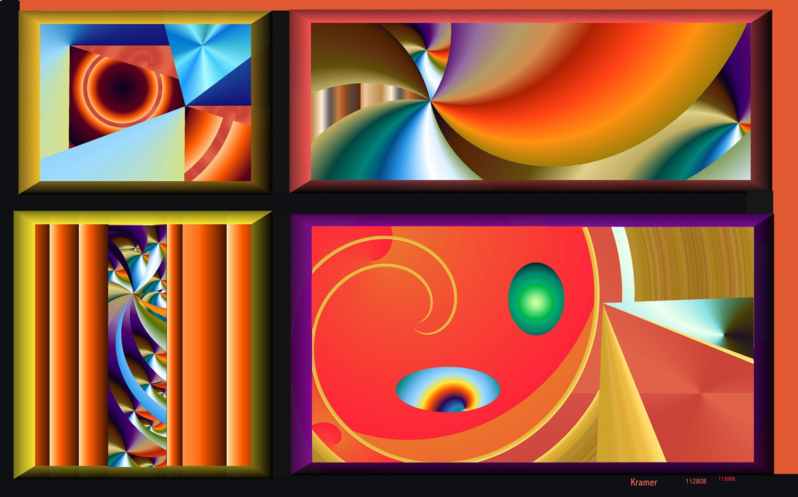

IMAGES OF THE DAY 71
06/01/2023 - 06/10/2023

Photoart
#006
by Teddynash
06/01/2023
Click image to access artist's full exhibit
Fractal Art 
Donnie 2008 Honorable Mention Winner
Poise
by Renata Spiazzi
06/02/2023
Click image to access Donnie 2008 winners
Mixed Technique
Donnie 2009 Honorable Mention Winner
Time Flies
by Juliette Gribnau
06/03/2023
Click image to access Donnie 2009 winners

Drawn Art
Landscapes Under the Hidden Moon
Landscape No. 1
by Fernando Hocevar
06/04/2023
Click image to access artist's full exhibit

Drawn Art 
Donnie 2016 First Prize Winner
Heard It on the Grapevine
by Joan Myerson Shrager
06/05/2023
Click image to access Donnie 2016 winners
Mixed Technique
Donnie 2013 Honorable Mention Winner
Cappadocian Chimneys
by Helga Schmitt
06/06/2023
Click image to access Donnie 2016 winners

Photo-based
Surreal Art
Whorse
by Damnengine
06/07/2023
Click image to access artist's full exhibit

Constructions 
Juxtaposing Shapes and Colors
Partition2a
by David Kramer
06/08/2023
Click image to access artist's full exhibit
3D
Rendered Art
The Wanderer above the Sea of Mist by Caspar David Friedrich
by Vladimir Rankovic
06/10/2023
Click image to access artist's full exhibit

BACK TO IMAGES OF THE DAY 70
NEXT